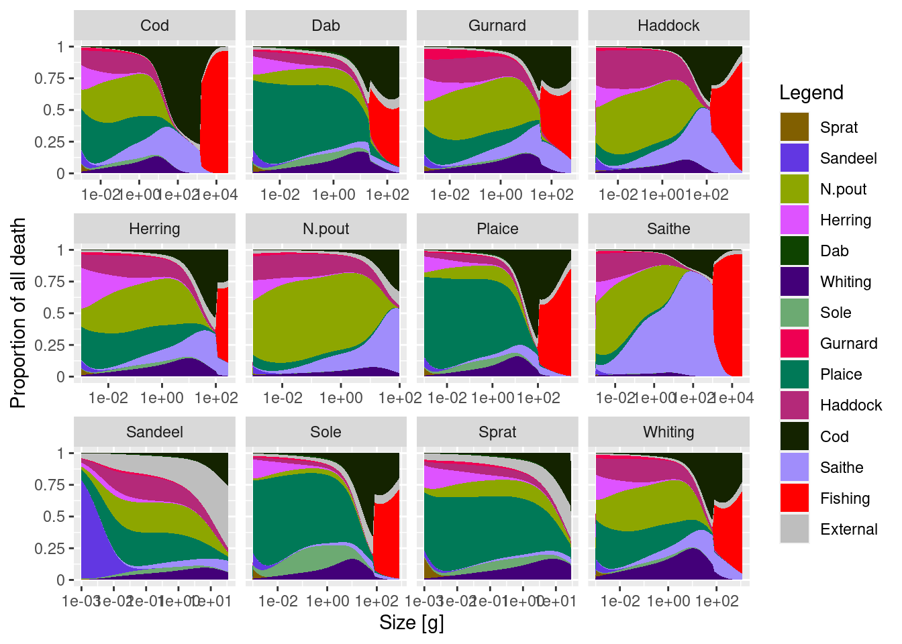

install.packages(c("mizer", "tidyverse", "plotly", "remotes", "usethis",
"rfishbase", "rmarkdown", "rstudioapi"))Install tools
For this course you will need access to a machine with an installation of R, a development environment like RStudio and some important R packages, including, of course, mizer itself and mizerExperimental. Below we give the necessary information to allow you to install these tools.
If you run into difficulties, please make a post in the Comments section at the bottom of this page. We will try to help you as quickly as possible. If you have a question, then it is likely that others will have the same question, so please do not hesitate to ask.
If you already have some of these tools installed, please make sure that the version you have is recent.
R
Mizer is compatible with R versions 3.1 and later. However in this course we will assume that you have a version newer than 4.0. So if you are still using 3.x, now is the time to upgrade. You can install or upgrade R on your computer by following the instructions at https://cran.r-project.org/ for your particular platform. In fact, upgrading follows the same procedure as installing from scratch.
Alternatively, if you can not or do not want to install R on your computer, you can also work with R and RStudio in your internet browser by creating yourself a free account at https://posit.cloud. There you can then install mizer as described below. Running mizer in the RStudio Cloud may be slightly slower than running it locally on your machine, but the speed is usually quite acceptable.
RStudio
The tutorials in this course assume that you are using RStudio to work with R. If you prefer to use a different R environment, then you may need to translate some of the instructions to how things are in your R environment.
RStudio develops rapidly and adds useful features all the time and so it is best if you install the latest version. This course was written with version 2023.06.0. If you already have RStudio installed but it is an older version, the way to upgrade is to just install the newest version. The old version will automatically be replaced by the new.
If you are new to RStudio, the video on the RStudio IDE homepage is well worth watching.
R Packages
R packages extend the functionality of R. mizer itself is such an R package. There is a central repository for R packages called CRAN which hosts all of the packages needed for this course, except for the mizerExperimental package. To install them on your computer just start RStudio and then in the console issue the command
The mizerExperimental package is for code that is still experimental and thus changes frequently. Therefore it is hosted in a GitHub repository. You install it with
remotes::install_github("sizespectrum/mizerExperimental", ref = "2f7d4ca")This may give you a list of other packages that you have already installed that have newer versions available and ask you to specify which ones you want to update. For the purpose of this course it probably will not be important, so if you like you can skip the updates for now.
Note the ref argument to install_github(). It specifies which particular version of the code you want to install. This makes sure that the version you install will behave as expected in this course. Unlike the mizer package, the mizerExperimental package does not promise that newer versions remain backwards compatible to earlier versions. So if you want reproducible code it will be best to install a fixed version.
Checking your installation
To check that everything works, copy and paste and then run the following code:
if (getRversion() < "4.0") warning("Your version of R is too old.")
if (packageVersion("mizer") < "2.4.1") warning("Your version of mizer is too old.")
if (packageVersion("mizerExperimental") != "2.4.0.9004") warning("You are using a different version of MizerExperimental. Please reinstall with the command given above.")
if (packageVersion("tidyverse") < "1.3.0") warning("Your version of tidyverse is very old. While this may not create a problem, updating it is nevertheless advised.")
library(mizer)
library(mizerExperimental)
plotDeath(NS_params)
If you do not get any “Warning” or “Error”, then everything is fine. If you experience problems, see below.
Issues and Discussions
You will find a comment section at the bottom of each course webpage. Please use it a lot to share your questions, thoughts and experiences as you go through the course. As with all computer-related things, unexpected problems are likely to crop up. Be sure to post about them in the Comments section.
When you post a comment you will be asked to log in to GitHub. You will probably already have an account on GitHub. If not, please create one for yourself. GitHub is the most common way for researchers to share their research code and the source material for this course is also hosted there, as is the mizer package itself. So it is a good idea to have an account there anyway.
You can use Markdown syntax in your post. The comments are threaded discussions.
The comments you post on this course website will also appear in the Comments section of the GitHub discussions for the course repository. Even after posting a comment you can go and edit the post on GitHub and it will be updated on this website as well.
Instead of posting a comment, you can also report issues by clicking on the “Report an issue” link that you find at the bottom of the right side-bar. That will create an entry in the GitHub issue tracker.
If you have a correction to a page or want to suggest an edit, use the “Edit this page” link. Don’t worry: we will need to approve your edits before they go live, so you can feel free to edit as much as you like.
You will find the “Edit this page” and “Report an issue” links on every tutorial page and you will find a comments section on every page of the course website. Never hesitate to use them.